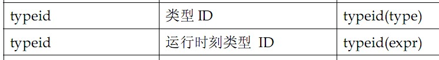
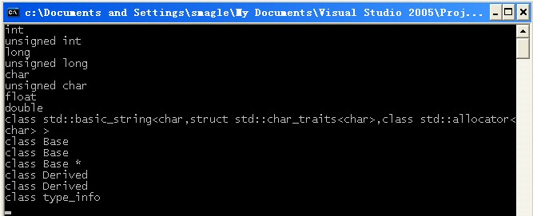
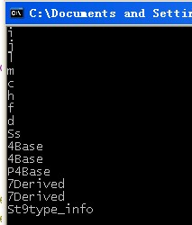

Posted on 2010-05-14 10:58
乱78糟 阅读(4293)
评论(0) 编辑 收藏 引用 所属分类:
C语言派系

在揭开typeid神秘面纱之前，我们先来了解一下
RTTI（Run-Time Type Identification，运行时类型识别），它使程序能够获取由基指针或引用所指向的对象的实际派生类型，即允许“用指向基类的指针或引用来操作对象”的程序能够获取到“这些指针或引用所指对象”的实际派生类型。在C++中，为了支持RTTI提供了两个操作符：dynamic_cast和typeid。
dynamic_cast允许运行时刻进行类型转换，从而使程序能够在一个类层次结构中安全地转化类型，与之相对应的还有一个非安全的转换操作符static_cast，因为这不是本文的讨论重点，所以这里不再详述，感兴趣的可以自行查阅资料。下面就开始今天我们的话题：typeid。
typeid是C++的关键字之一，等同于sizeof这类的操作符。typeid操作符的返回结果是名为
type_info的标准库类型的对象的引用（在头文件typeinfo中定义，稍后我们看一下vs和gcc库里面的源码），它的表达式有下图两种形式。

如果表达式的类型是类类型且至少包含有一个虚函数，则typeid操作符返回表达式的动态类型，需要在运行时计算；否则，typeid操作符返回表达式的静态类型，在编译时就可以计算。 ISO C++标准并没有确切定义type_info，它的确切定义编译器相关的，但是标准却规定了其实现必需提供如下四种操作（在之后的章节中我会来分析type_info类文件的源码）：
| t1 == t2 |
如果两个对象t1和t2类型相同，则返回true；否则返回false |
| t1 != t2 |
如果两个对象t1和t2类型不同，则返回true；否则返回false |
| t.name() |
返回类型的C-style字符串，类型名字用系统相关的方法产生 |
| t1.before(t2) |
返回指出t1是否出现在t2之前的bool值 |
type_info类提供了public虚
析构函数，以使用户能够用其作为基类。它的默认构造函数和拷贝构造函数及赋值操作符都定义为private，所以不能定义或复制type_info类型的对象。程序中创建type_info对象的唯一方法是使用typeid操作符（由此可见，如果把typeid看作函数的话，其应该是type_info的
友元）。type_info的name成员函数返回C-style的字符串，用来表示相应的类型名，但务必注意这个返回的类型名与程序中使用的相应类型名并不一定一致（往往如此，见后面的程序），这
具体由编译器的实现所决定的，标准只要求实现为每个类型返回唯一的字符串。
上面的都是一些理论的东西，看不真切，下面将通过代码和图例来展示。
#include <iostream>
using namespace std;
class Base {};
class Derived: public Base {};
int main()
{
Base b, *pb;
pb = NULL;
Derived d;
cout << typeid(int).name() << endl
<< typeid(unsigned).name() << endl
<< typeid(long).name() << endl
<< typeid(unsigned long).name() << endl
<< typeid(char).name() << endl
<< typeid(unsigned char).name() << endl
<< typeid(float).name() << endl
<< typeid(double).name() << endl
<< typeid(string).name() << endl
<< typeid(Base).name() << endl
<< typeid(b).name()<<endl
<< typeid(pb).name()<<endl
<< typeid(Derived).name() << endl
<< typeid(d).name()<<endl
<< typeid(type_info).name() << endl;
return 0;
}
我分别用MS的V8和GUN的GCC编译该段代码并运行，结果分别为下面的左右二图。
 
对比代码以及上面的文字描述，不知道各位是否已经有所明了（这里需要注意的是Base类的对象b和对象指针pb，他们的输出）。
考虑到V8的输出很直观，所以我采用V8来做实验。下面对上面的代码稍微添加一点内容，如下：
Base *pb2 = dynamic_cast<Base *>(new Derived);
Base &b2 = d;
Base *pb3 = &d;
cout << typeid(pb2).name() <<endl//输出Base *
<< typeid(b2).name()<<endl //输出Base
<< typeid(pb3).name()<<endl//输出Base *
<< typeid(*pb3).name()<<endl;//输出Base
因为Base不包含虚函数，所以typeid的结果指出，表达式的类型是Base或Base *型，尽管他们的底层对象是Derived。即：
当typeid操作符的操作数是不带有虚函数的类类型时，typeid操作符会指出操作数的类型，而不是底层对象的类型。 下面在对Base函数做一个小小调整，为其加上一个虚函数，再看输出结果。
class Base {virtual void f(){}; };
/*...*/
cout << typeid(pb2).name()
<<endl//输出Base *
<<
typeid(b2).name()<<endl //输出Derived
<<
typeid(pb3).name()<<endl//输出Base *
<<
typeid(*pb3).name()<<endl;//输出Derived
这次Base含有虚函数，注意看结果，指针仍然是Base*的，尽管他们指向的是底层对象Derived，而这些Base对象的类型却是Derived的。
因为指针pb3不是类类型，所以typeid就返回该指针pb3的指针类型Base *。而*pb3是一个类类型的表达式，而且该类带有虚函数，所以指出该pb3指向的底层对象的类型Derived。
如果typeid操作符的操作数是至少包含一个虚拟函数的类类型时，并且该表达式是一个基类的应用，则typeid操作符指出底层对象的派生类类型。 好了，文篇到此结束，留下几道小题目吧。
//采用V8环境
cout<< typeid(7.84) <<endl
<< typeid(Base*) <<endl
<< typeid(&pb3) <<endl;
感谢：
http://blog.programfan.com/article.asp?id=45931